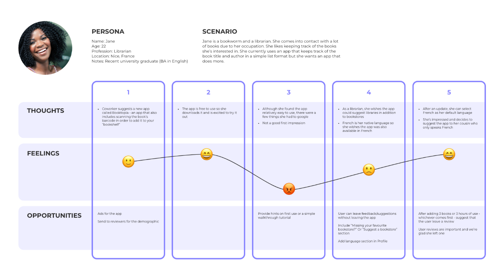

BRIEF
Booktopia is an app that helps people easily find and save books. In addition to the app, there is also
a website.
**Note: This is a mockup idea or personal project
PROCESS
Inspired by justwatch.com where you can find where to stream or buy tv shows and movies.
By browsing competitors I was able to see what worked and what didn’t. I took notes of the positives and what would make for a better user experience. I was able to build out a user journey based on my notes. Then I began working on wireframes

After deciding on what part of the layout worked best, I made a high fidelity mockup and chose the colour palette
Initial sketches were done in Procreate
Final designs were completed in Figma